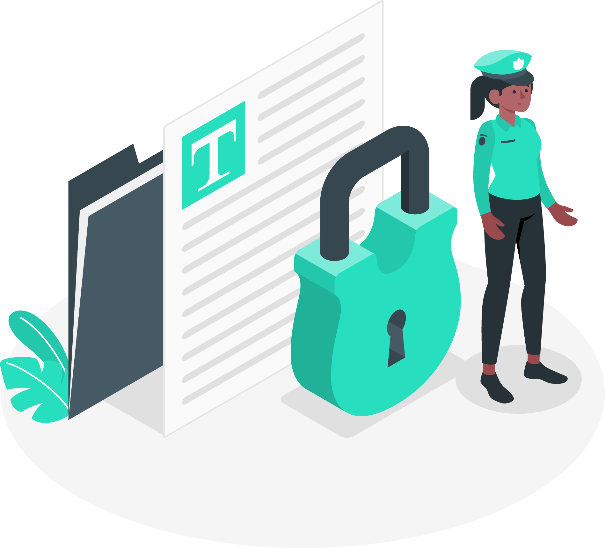
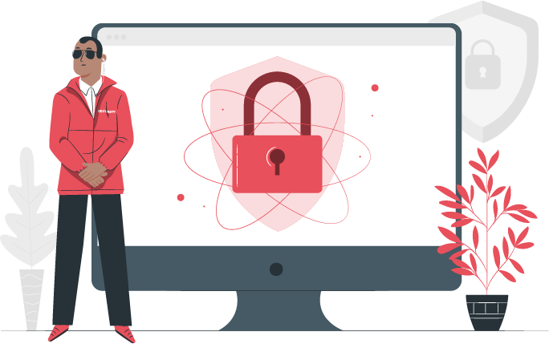

CYBER ATTACKS
A malicious and deliberate attempt by an individual or
organization to breach the information system of another
individual or organization.

COMPONENTS OF CYBER SECURITY
Cybersecurity is a way of preventing and protecting a
system, networks, and technologies from unauthorized
access

NEED OF CYBER SECURITY
Cybersecurity risk is increasing, driven by global connectivity
and usage of Internet and network based services and
products .
